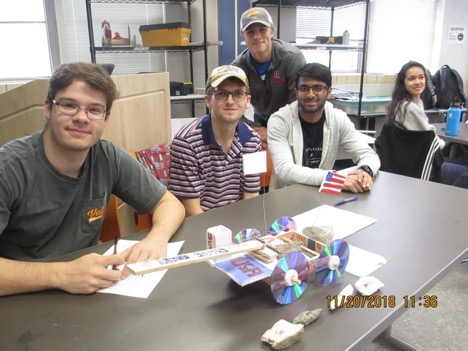
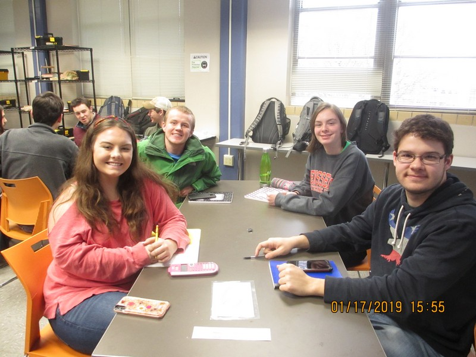

EF 157
My Team:

Project 1: Calculations
Our first project was an introduction to the different types of measurements/calculations
we would be working with as engineering students. We had to compile and analyze
survey data to draw conclusions.
Project Report
What We Learned
-
We learned how to estimate values with an appropriate balance of
scientific accuracy and precision.
-
We learned to develop a scientific report of our findings.
Project 2: Reverse-Engineering
We dissected a nonfunctioning coffee maker, studied its operation, and
repaired it.
What We Learned
-
Reverse-engineering and product research allowed us to identify every part of the
coffee maker and its function.
-
The coffee machine's circuit was broken and we learned how to use solder
to fix it.
Project 3: Building a Model
In this project, we used a mousetrap to propel a car along a track.
What We Learned
-
Several times, we had great ideas fail and had to edit or completely scrap
our progress to get the design working.
EF 158
My Team:

Project 1: Applying Concepts
In this project, we were tasked with building a barstool using only foam core
and glue for its construction. We were also given specific parameters like a
maximum height and width, and the stool had to have a cantilevered footrest.
What We Learned
-
We were only given very limited materials for testing and design, so we
learned to reduce testing and still deliver a successful design.
-
Part of our grade was calculated based on how aesthetically pleasing our stool was,
so we had to focus some of our efforts on visuals.
Project 2: Starting from Scratch
In this project, we were not given a problem to solve. We had to do research
to identify a problem in our area that pertained to the NAE Grand Challenges for Engineering.
We decided to design an after-school program that would help improve learning for Knoxville students.
Project Website Link
What We Learned
-
We spent about 2/3 of the project focusing on need identification.
It was a valuable experience to research and debate issues and the
feasibility of different solutions.
-
This entire project was focused around teaching us the engineering design process
and how to apply it beyond solving basic homework problems.